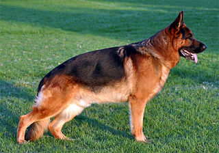
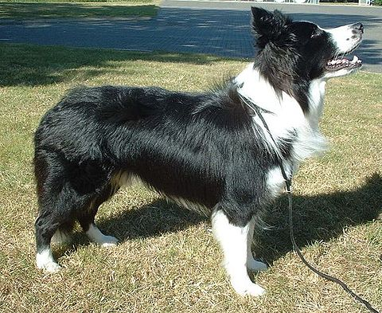

Busca tu Raza favorita !!!
Dogo Argentino
 Tamaño: Gigante.
Peso: Entre 35 y 45kg.
Tipo de pelo: Corto.
Carácter: Tolerable, amigable,
Tamaño: Gigante.
Peso: Entre 35 y 45kg.
Tipo de pelo: Corto.
Carácter: Tolerable, amigable,
cariñoso, alegre, leal y protector.
Salud: Muy saludable.
Esperanza de vida: Entre 10 y 15 años.
Pastor Aleman

Tamaño: Grande
Machos: Hasta 66 cm
Hembras: Hasta 60 cm
Machos: Hasta 40 kg
Hembras: Hasta 31 kg
Pelo: Corto.
Color: Negro,Marron.
Energia: Media.
Fuertes Agilidad , Pastoreo , Obediencia y Rally.
Border collie

Tamaño: 13-20kg
Altura: 55cm
Nivel Energia: Muy Energico
Esperanza de Vida: 10 - 14 años
Pelo: Negro con blanco
Cuvac eslovaco
 Temperamento: Vigilante, fuerte y valiente.
Energia: Nivel alto. Muy vigoroso y activo.
Adaptabilidad: Media/baja.
Sociabilidad: Media.
Salud: Muy buena.
Longevidad: Media.
Utilidad: Muy versátil.
Temperamento: Vigilante, fuerte y valiente.
Energia: Nivel alto. Muy vigoroso y activo.
Adaptabilidad: Media/baja.
Sociabilidad: Media.
Salud: Muy buena.
Longevidad: Media.
Utilidad: Muy versátil.